NINEVEH
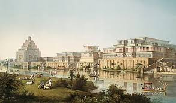
Introduction
Nineveh was one of the most important cities of ancient Mesopotamia and became emblematic as the capital of the powerful Neo-Assyrian Empire. However, this city was not always the administrative center of Assyria. Originally, the first capital of the Assyrian Empire was the city of Ashur, located on the banks of the Tigris River. Ashur played this role for several centuries, serving as the religious and political center of the empire and honoring the god with the same name as the city, Ashur, the tutelary deity of the Assyrians.
It was during the Neo-Assyrian period (911–609 BC) that Nineveh rose as the imperial capital, especially during the reign of Sennacherib (r. 705–681 BC), who transformed the city into a monumental center. The king expanded Nineveh significantly, building palaces, temples, and an extensive network of walls and canals to protect and supply the city. The opulence of Nineveh reflected the height of Assyrian power, which stretched from Egypt in the west to Babylon in the south, encompassing much of the Fertile Crescent.
History
In quite a coincidence of history, and something that shows just how old this place is — it was the famous Greek historian Xenophon who stumbled upon Nineveh’s crumbling ruins about two centuries after its collapse. The Greeks at this time around 400 BC were evading capture from a vast Persian army when they first saw a city of astonishing scale, deserted and partially buried under the sands.
Nineveh is mentioned about 1800 BC as a worship place of Isatar, who was responsible for the city's early importance. There is no large body of evidence to show that Assyrian monarchs built at all extensively in Nineveh during the 2nd millennium BC. When Sennacherib made Ninua his capital at the end of the 8th century BC, it was already an ancient settlement. Later monarchs whose inscriptions have appeared on the Acropolis include Shalmaneser I and Tiglath-Pileser I, both of whom were active builders in Asshur; the former had founded Calah (Nimrud). Nineveh had to wait for the neo-Assyrians, particularly from the time of Ashurnasirpal II (ruled 883-859 BC) onward, for a considerable architectural expansion. Thereafter successive monarchs kept in repair and founded new palaces, temples to Sin, Nergal, Nanna, Samas, Isatar, and Nabiu of Borsippa.
Nineveh's greatness was short-lived. About 633 BC the Assyrian empire began to show signs of weakness, and Nineveh was attacked by the Medes, who subsequently, about 625 BC, joined by the Babylonians and Susianians, again attacked it.
The fate of Nineveh, however, was tragic. In 612 BC, the city was conquered and sacked by an alliance of Medes and Babylonians, leading to the fall of the Assyrian Empire. This event marked the end of Assyrian dominance in the region and the destruction of Nineveh.
612 BC: Ashurbanipal's successor held the Assyrian throne and at his death Sin-shar-ishkin became king. In the summer of 612, Nabopolassar, a Chaldean leader, aided by Medes and northern nomads, attacked, looted and destroyed Nineveh, an event that marked the crumbling of the last vestiges of power in Assyria and established the foundations for the Neo-Babylonian Empire. There is some evidence that the defeat of Nineveh was the occasion of rejoicing in Judah, although the Assyrians established a new capital at Harran. Within a few years Harran was conquered by the Medes.
With Sargon’s death, however, Dur-Sharrukin was abandoned, and Sennacherib began his own, equally ambitious project, transforming the existing city of Nineveh into his imperial capital. The reasons for the move are not fully clear, but it is thought that the manner of Sargon’s death—the king was killed while on campaign, and his body could not be recovered—rendered the new city he had created inauspicious, and that relocation to Nineveh (an already ancient city, again breaking with Sargon’s practice) was therefore essential for the new king’s fortune.
From its peak as the largest and most grandiose city of the world, Nineveh would collapse into complete obscurity within a shockingly short period of time. The death of the last great emperor Ashurbanipal left a power vacuum that his sons were unable to navigate and their sibling rivalry escalated into a full-blown civil war. This family saga would create the opportunity for creating a coalition of subjugated people which included the Babylonians, Medes and Elamites. In 612 BC, this allied force ransacked Nineveh in the fatal and destructive event known as the Fall of Nineveh.
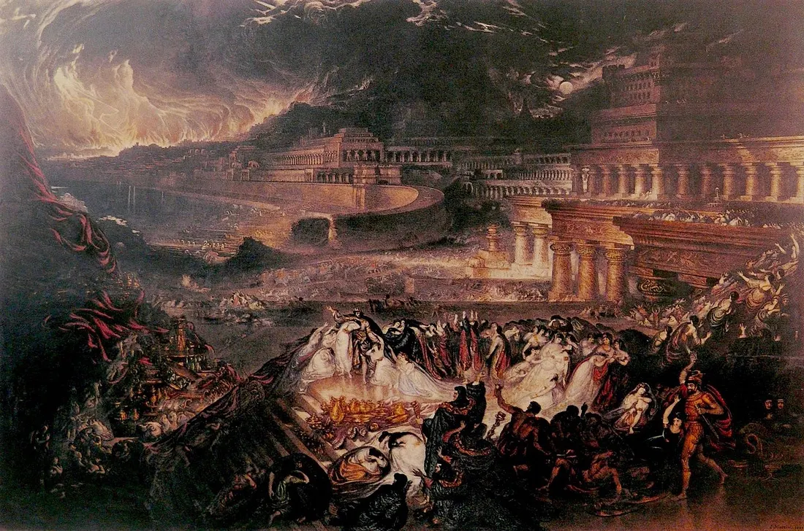
Theories
Oxford scholar Stephanie Dalley has proposed that the Hanging Gardens of Babylon were actually the well-documented gardens constructed by the Assyrian king Sennacherib (reigned 704–681 BC) for his palace at Nineveh; Dalley posits that during the intervening centuries the two sites became confused, and the extensive gardens at Sennacherib's palace were attributed to Nebuchadnezzar II's Babylon.[1] Archaeological excavations have found traces of a vast system of aqueducts attributed to Sennacherib by an inscription on its remains, which Dalley proposes were part of an 80-kilometre (50 mi) series of canals, dams, and aqueducts used to carry water to Nineveh with water-raising screws used to raise it to the upper levels of the gardens.
Some researchers believe the Pope came to visit the "Nineveh Gate," as Nineveh was once a "cosmic stargate." The Pope visited a specific location they believe to be an "ancient energy point." Additionally, the Mosul region contains "ley lines" connected to Babylon and Sumer.
Some say the Pope visited the region because it represents the remains of a “sunken civilization” older than previously known. They also say the Vatican knows another history of Assyria and Sumer, and that his visit to Ur (the city of the Prophet Abraham) is not only religious, but also related to the search for “the true origin of man.”
Some say the Vatican is hiding “Syriac texts” about the Prophet Jonah. The visit was to inspect certain sites associated with the story of “Jonah’s emergence from the whale” because they hold a spiritual secret. And that the Pope came to read symbols engraved there.
Some say the Pope came to retrieve ancient manuscripts stolen from monasteries or to secretly negotiate the release of artifacts “belonging to the Vatican” that have remained in Mosul since the 19th century.
Some pages say that the Pope visited the region because it represents the remains of a “sunken civilization” older than known. And that the Vatican knows another history about Assyria and Sumer. And that his visit to “Ur” (the city of the Prophet Abraham) is not only religious, but is related to the search for “the true origin of man.”
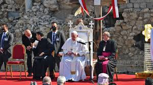
The book of Jonah contains a lot of incredible things, not least of which Jonah being swallowed up by a great fish. But for me, one of the most incredible things in the entire book has to do with what we find in chapter three. There we read about an entire evil, pagan city, Nineveh – the capital of the Assyrian empire – repenting
Here is what we find in the ten verses of Jonah 3:
Then the word of the Lord came to Jonah the second time, saying, “Arise, go to Nineveh, that great city, and call out against it the message that I tell you.” So Jonah arose and went to Nineveh, according to the word of the Lord. Now Nineveh was an exceedingly great city, three days’ journey in breadth. Jonah began to go into the city, going a day’s journey. And he called out, “Yet forty days, and Nineveh shall be overthrown!” And the people of Nineveh believed God. They called for a fast and put on sackcloth, from the greatest of them to the least of them. The word reached the king of Nineveh, and he arose from his throne, removed his robe, covered himself with sackcloth, and sat in ashes. And he issued a proclamation and published through Nineveh, “By the decree of the king and his nobles: Let neither man nor beast, herd nor flock, taste anything. Let them not feed or drink water, but let man and beast be covered with sackcloth, and let them call out mightily to God. Let everyone turn from his evil way and from the violence that is in his hands. Who knows? God may turn and relent and turn from his fierce anger, so that we may not perish.” When God saw what they did, how they turned from their evil way, God relented of the disaster that he had said he would do to them, and he did not do it.
Jonah’s prophecy
Some scholars (such as Gerard Gertrude and historians like Craig Davis) defend the story as a real historical event in the 8th century BCE (c. 780-750 BCE), during the reign of Jeroboam II in Israel. Jonah went to Nineveh to warn it of the brutal Assyrian military expansion (torture, captivity, etc.), which led to the city's repentance and a halt to invasions for about 80 years (824 BCE onwards).
The story of the Prophet Jonah (peace be upon him) with the city of Nineveh (the capital of the Assyrians in northern Iraq today, near Mosul) is one of the most prominent stories in the Quran, mentioned in chapters such as Yunus (98), As-Saffat (139-148), and Al-Anbiya (87-88). It is narrated as evidence of God's mercy, the repentance of nations, and the infallibility of the prophets.
Muslim scholars (such as al-Tabari, al-Zamakhshari, Ibn Kathir, and contemporary scholars like Afaf al-Najjar) affirm that Jonah, son of Matta (a descendant of Jacob), was sent to the people of Nineveh to call them to monotheism and to abandon the worship of idols (such as Ishtar). They initially rejected the call, so Jonah became angry and left the city. However, God commanded him to return after they collectively repented (even animals were depicted as part of a battalion in the commentaries to emphasize the inclusiveness of the message). This is a Quranic exception: "Then why was there not a town that believed and whose faith benefited it, except the people of Jonah?" (Jonah 98), where God lifted the punishment from them because of their repentance before it was carried out. Any accusation that Jonah was "angry with God" is refuted; rather, he was angry only with his people, and he was infallible. The alleged tomb in Mosul (Deir Yunan) is considered historically undocumented, and may belong to another person (such as John the Lame, 700 AD).
Nineveh heard Jonah’s prophecy about destruction and repented. They turned from their evil ways and God had mercy on them. He did not destroy them. Yet gradually they returned to their evil ways, until over a century later, Nahum predicts their demise. This time they did not repent.They had time. Nahum gave his prophecy around 663 B.C. and they were destroyed by the Babylonians in 612.
A Sumerian clay tablet (from the library of Ashurbanipal in Nineveh, discovered in the 19th century) is claimed to contain the "Nineveh constant," a precise astronomical figure representing 2.268 million days (or 6.3 million years)—a cosmic cycle that corresponds to a solar day (86,400 seconds). This, according to author Maurice Chatelain (in *Our Ancestors the Supermen*, 1979), proves that the Sumerians (heirs of Nineveh) inherited precise astronomical knowledge that could only have been acquired from a more advanced earlier civilization (possibly Atlantis).
It is noted that the Babylonians and Assyrians (of Nineveh) discovered an 18-year, 11-day cycle (223 lunar months) for predicting eclipses. The Nineveh tablets recorded an eclipse in 763 BCE, the oldest documented prediction. Similar to the Nineveh constant, it focuses on precise astronomical cycles, but it is shorter and not linked to extraterrestrial beings.
Library of Ashurbanipal

The library of Ashurbanipal (c. 668-627 BC), discovered in Nineveh in 1850, contains more than 30,000 cuneiform clay tablets covering subjects such as literature, medicine, astronomy, and prophecy.
Michael Cremo (Forbidden Relics, 2025): The library is part of a "lost civilization" from 10,000 years ago, where the Anunnaki passed on genetic and astronomical knowledge. He refers to the divination tablets as "precise mathematical calculations" of planetary orbits, predating modern science by 1,400 years (such as the calculation of Jupiter's orbit on the 2015 tablet).
They say it was not just a collection of clay tablets, but a technical archive that included highly accurate star maps, advanced astronomical tables, texts on "energy" and "sound engineering," and information about the Anunnaki's journey to Earth. Some believe it was "the first university in history."
Some say that the library was not written during the Assyrian era, but rather contained Sumerian, Babylonian, and Akkadian texts dating back tens of thousands of years. King Ashurbanipal was the only one who collected them, and he did not understand much of it.
The texts contained the number 2,268,000 days, and they say that this number represents a cosmic cycle or a "mathematical constant" that no ancient civilization could have known, and they link it to the length of the Earth's day, the moon's rotation, and the position of the sun.
The British Museum hides thousands of tablets that don't fit with conventional history. However, it refuses to publish texts containing astronomical secrets and texts discussing ancient technology.
The Temple of Nabu
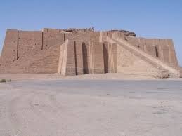
The Temple of Nabu (É-zida) in the ancient city of Nineveh (near present-day Mosul), or sometimes referred to as the northwestern palace of Sennacherib, which contains mysterious chambers.
Some claim that the ziggurat of Nineveh (or temple dedicated to the god Nabu) was not merely a religious structure, but a device or energy platform used to communicate with “heavenly entities”.
The cuneiform texts that speak of the god Nabu (the god of wisdom and writing) who "enters and exits from the sky" are interpreted literally as evidence of a stargate.
The architectural design of some of the underground chambers in Nineveh (especially those discovered by Austen Henry Layard in the 19th century) contains massive stone doorways and intricately carved passageways that are not functionally justified, supposedly protecting the "gateway".
Some people link this to "Dur-An-Ki," the Sumerian name for "the link between heaven and earth," and believe that Nineveh contained a version of this gate.
Some suggest that Nineveh was the “headquarters of the Anunnaki operations” and that this temple was “an advanced technology for non-terrestrial transportation.”
The temple of Ishtar
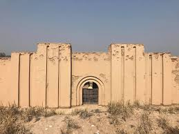
Ishtar/Inanna is called in the texts “Queen of Heaven and Earth” and “Opener of the Gates of Heaven”, and in the epic “Inanna’s Descent to the Underworld” she passes through seven gates (interpreted as seven dimensions or energy gates).
The temple of Ishtar (Inanna/Ishtar) in Nineveh – as well as in Ashur, Erbil and elsewhere – is considered one of the temples most associated with the idea of a “crossing point to other worlds.”
Some claim that the temple of Ishtar in Nineveh contained a “ritual chamber” used to see or enter other dimensions. They base this on the symbols of the stars associated with Ishtar (Inanna) and interpret them as “astronomical signs of passage between worlds.”
Some say that the temple of Ishtar was a center for “sacred sex” (Hieros Gamos): priestesses (qadištu or nadītu) practiced ritual sex with kings or visitors.
Researchers (such as Anton Parks, William Henry, and, to a lesser extent, Lawrence Gardner) say that this act was not merely a fertility ritual, but a ritual to open the stargate within the human body itself.
Some believe that the Ishtar priestess activated the man’s “heart chakra or third eye” during the sexual ritual, so that his consciousness would move to the world of the gods (the world of stars or the fifth dimension).
The temple of Ishtar (which was renovated by King Sennacherib and then Ashurbanipal) contained an inner room called the House of Divine Secrets (bit hilṣi), which was entered only by the king and the high priestesses.
Some researchers (especially followers of Andrew Collins and Graham Hancock) claim that this room contained a large black obsidian mirror or a statue of Ishtar with horns and lapis lazuli eyes, and was used as a visual gateway (like the Mayan “smoke mirror”).
Some people link this to the “secret chamber” that Layard found under the Temple of Ishtar in Nineveh, which was sealed by a huge stone door that could only be opened by a complex mechanism.
Many believe that her temple was not just a place of worship, but a receiving/transmitting station for her and other “gods” when they descended or ascended.
In social media content, it is said that the Anunnaki used the Temple of Ishtar as a gateway to “Dilmun” or “Heavenly Garden”. Ishtar herself “descended and ascended” through the gateway during her journey to the underworld, indicating the existence of a real system of passage.
Many have focused on the eight-pointed star of Ishtar, arguing that it is not merely a religious symbol, but a stellar map indicating an interstellar journey. The eight points represent energy gateways leading to different realms. Furthermore, temples bearing the eight-pointed symbol are seen as points on Earth connected to the cosmic energy grid.
Some say that certain inscriptions in Nineveh depict cylinders, rings, and discs resembling technological devices. They claim these may have been parts of a gate-opening or "energy-harnessing" device, and that the Anunnaki passed this technology on to priests, who knew how to activate the gates.
Lamassu
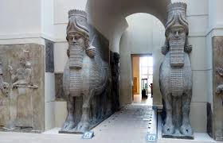
The winged bulls, known as "Lamassu" in ancient Assyrian tradition, are colossal statues combining a human head (symbolizing intelligence), the body of a bull or lion (symbolizing strength), and the wings of an eagle (symbolizing freedom). They were placed at the gates of palaces and cities in the Assyrian Empire (c. 883–612 BCE) to protect against evil. In a traditional historical context, they are both religious and artistic symbols.
Lamassu are gateways to time travel or dimensional travel, protecting against "evil" (other beings). Their location at the doors and magical inscriptions (curses on intruders) are similar to the gates of Persepolis in Iran, or the gates of heaven in Mayan mythology.
It is said that the Lamassu is not just a symbol, but a “memory” of giant creatures that lived among humans. And that the Assyrians did not invent its form, but saw hybrid creatures that resembled it in a pre-flood civilization.
Some say that the Sumerian/Anunnaki gods created hybrid beings: human head + bull body + falcon wings. And that these statues are not fiction but “biological reports” of genetically engineered creatures.
According to some researchers who say that the statues are very large, this is evidence that ancient humans were giants. And that the kings of Assyria were 4-6 meters tall, so the statues are the size of them.
Some say that inside the statues are geometric cavities that represent “energy pipes”, and that they acted as spiritual energy generators to protect the palaces.
They say that Assyria received thousands of years old symbols from an unknown civilization before the Flood. And that the statues are late copies of much older symbols.
Nergal Gate
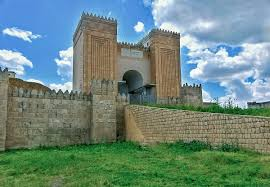
It is named after the goddess Nercal, and is believed to have been used for ritual purposes. It is the only gate surrounded by winged bulls. The gate was discovered in the mid-nineteenth century and restored in the twentieth century.
In ancient Nineveh, there was a gate in the northwestern wall officially called the Nergal Gate (Assyrian: 𒀭𒈨𒌍𒋫𒀀 Bāb dNergal), one of the 15 major gates in the Nineveh wall built by Sennacherib.
This gate led directly to the road leading to the city of “Cuthah”, the holy city of the god Nerkel in Babylonia, and Kuthah itself was considered in the texts to be the “entrance to the underworld” (like the Sumerian city of “Kur”).
In front of the gate were two huge statues of Nerkel in the form of a winged bull with a human head, and under the gate they buried amulets to ward off spirits (such as the Lamashtu and Pazuzu statues).
Researchers (especially followers of Anton Parks, Jason Martell, and local Iraqi secret groups) say that the portal was not just symbolic, but was a permanently open passage between Earth and the Underworld (or the lower fourth dimension). And that Nerkel himself was not a “god” but an Anunnaki/Reptilian being who was in charge of the Underworld region, and the portal was under his direct command.
In 1854, when Austen Henry Layard and Hormizd Rassam were excavating near the gate, they discovered a huge secret tunnel running directly beneath the wall, sealed by massive stone doors carved with Nerkel symbols and demonic figures. Official reports state that the tunnel was for drainage, but some believe it was the actual entrance to the gate.
There are local testimonies from the people of Mosul (before ISIS) saying that this gate was forbidden to cross at night even in modern times, and people used to hear strange sounds and see dark creatures coming out from underground in that area.
In 2003–2004, the US military conducted secret excavation operations near the Nerkel Gate during the occupation of Mosul, and removed something from the tunnel.
When ISIS blew up parts of the Nineveh wall in 2015–2016, they deliberately destroyed the Nerkel Gate specifically (although photos show the Eastern Gate more), and some say this was to close the gate permanently or to prevent something from coming out again.
Today the Nerkel Gate is partially destroyed and buried under rubble, but it is still considered by some theories to be one of the most dangerous “gates” in Iraq, and it is said to have been the main passage for “underworld beings” (genies, lower Anunnaki, or beings from another dimension).
Beside the gate are lamassu (winged lions with human heads), which, according to alternative interpretations, were not merely symbolic statues but "gatekeepers preventing unwanted beings from passing through." Some say the winged lions were "stone watchdogs" with a certain energy.
Theories suggest that the Nerkel Gate was one of the most important energy points in Mesopotamia, connected to the Temple of Ishtar and the Gate of Inanna in Ur. It formed a "cosmic crossing line" for beings coming from the "world of the Anunnaki." Some describe it as a "field gate through which low-frequency beings pass," because Nerkel is associated with death and darkness.
The Ashur Gate

The Ashur Gate (Assyrian: Bāb dAššur) is the main western gate in the Great Wall of Nineveh, and is considered the opposite pole to the Nerkel Gate.Its name itself is dedicated to Ashur, the supreme god of the Assyrian state (who later became the national god and "Lord of the Gods").
Its geographical and cosmic location: overlooking the Tigris River, beyond which the royal road to the holy city of Ashur (the capital of the ancient state) begins. That is, it was "the gateway through which the king entered after his coronation in Ashur to become a living god in Nineveh."
The Assyrian kings, after the “death and resurrection” ritual in the city of Ashur (they were symbolically buried and then emerged from the gate as incarnate gods).
In 2003–2004, when US forces entered Mosul, they specifically chose the Ashur Gate as the main entrance to their military base within the walls of ancient Nineveh (the base was officially called Camp Ashur). Many say this was not a coincidence, but rather because intelligence was searching for something beneath the gate.
In 2014–2016, ISIS did not completely destroy the Ashur Gate as it did the Mashriqi and Adad Gates, but only blew up the side statues, leaving the main arch standing. Some alternative researchers (as well as some former Iraqi officers) say that ISIS leaders were afraid of “opening the upper gate” or that other parties ordered it to be left intact.
The Ashur Gate is the only one of Nineveh's great gates to have been almost completely restored (with French and American assistance), and it has become a major tourist entrance to the archaeological site of Nineveh. But even now, local guards and residents say that at night around the gate, things are "different"—strange lights, whispering voices, and a feeling that you are being "watched."
It is said that Ashur was the “guardian of the gate between worlds.” The gate itself was geometrically divided in such a way as to prevent “undesirable beings” from entering.
Shamash Gate

Located on the road to Erbil Governorate, it is considered one of the important gates of the Neo-Assyrian Empire. Its entrance is approximately 2 meters wide, and it was restored by the Iraqi government in 1960.
The Shamash Gate (Bāb dŠamaš) – or “Gate of the Sun” – is the great eastern gate in the wall of Nineveh, and in alternative theories it is considered the strongest and most dangerous of all the four main “cosmic” gates of Nineveh.
Directly facing the sunrise at the spring and autumn equinoxes (it was cosmically aligned with extreme precision).A common belief is that dawn light was used to activate the gate. The gate was oriented geometrically to receive the first rays of sunlight. When the dawn ray struck the gate, the light passageway would open.They say that the Shamash Gate was the entrance through which the “Disc of Shamash” entered the city, and that the neighboring temples were “revitalization stations.”
Some content creators say that priests would stand in front of the gate at dawn, raise the golden plates, and reflect the light towards the symbol of Shamash. This ritual was said to have opened a passage for luminous entities coming from the world of the sun.
Its name is dedicated to Shamash (the god of the sun, justice and absolute truth), who in cuneiform texts was “the judge of gods and people” and “the one who sees everything.”
It was guarded by the largest winged bull statues in all of Nineveh, and some ancient drawings show that one of the bulls was painted with gold to reflect the first rays of the sun.
Excavations in 2018–2023 (after the liberation of Mosul) revealed that beneath the Shamash Gate there is a very long stone passage heading east underground for a distance of more than 400 meters, then turning north towards the Tell Nabi Yunus (which is said to contain the secret palace of Esarhaddon and another gate).
In 2016, ISIS attempted to blow it up completely, but the bombing partially failed. It is said that the explosion was intended to "wake up" the gate or close it permanently.
A joint French-American-Iraqi team has been working on secret excavations beneath it since 2024, and the publication of photos has been prohibited.
Locals now call it the “Forbidden Gate of the Sun,” and many workers refuse to work near it at night.
Adad Gate

It was restored by the Iraqi government in 1960 AD, but the work was not completed. Some of the original Assyrian buildings and the last Assyrian defenses are visible through it.
The Adad Gate (Assyrian: Bāb dAdad) – or “Eastern Gate” as it is called today – is the southeastern gate in the Nineveh wall. (Especially from 2016 to 2025) it became considered the most dangerous and “energically contaminated” gate among all fifteen Nineveh gates.
In Assyrian texts, he is described as “the one who opens the gates of heaven and hell together,” meaning that he does not differentiate between the two worlds, and this is what makes him “a neutral evil.”
In July 2016, ISIS almost completely blew up the Al-Mashriqi (Adad) gate using tons of explosives, and it was the first gate to be completely destroyed in Nineveh.They say that this explosion was not "random sabotage," but rather a deliberate ritual to forcibly open the gate, because the huge explosion was followed by a strange thunderous sound for hours afterward, even though the sky was clear.
The phenomena that began after the bombing (locally documented) include sudden thunder and lightning storms over the area, even on hot summer days without clouds; the appearance of tall shadowy figures (3–4 meters) moving at breakneck speed among the rubble at night (filmed by Iraqi soldiers with their phones in 2017–2018); and a significant increase in cases of “demonic possession” in the eastern Mosul neighborhoods near the gate (even local religious figures acknowledge this).
The Gate of Adad was a gate that had been forcibly closed since the time of Sennacherib because it opens onto the "Interdimensional Void," the place from which beings that do not belong to either the underworld or the upper world emerge (what some call Archons or Predatory Interdimensionals).
Some claim that the gate was designed in such a way as to generate a specific sound echo. This echo is an "activation tone" that opens the gate. Priests would chant sounds similar to thunder. The sound of thunder was the password to open the gate of Adad.
An American-British archaeological team attempted to excavate beneath it in 2023, but the project was suddenly halted and the site was permanently closed "for unspecified security reasons."
Therefore, if you ask any Mosul resident today, "Which gate is more dangerous?" he will immediately answer you: "The Eastern Gate... don't go near it."
Mashki Gate

The gate of the irrigation ditch is known as Bab al-Masqa, used for watering livestock near the Tigris River, which used to run 1.5 km to the west.
The Maski Gate (Assyrian: Bāb dMaski or Maški Gate) is the great southwestern gate in the wall of Nineveh, which became known among Iraqi and Western secret groups as the “Silent Gate” or “Dead Gate”,It led to the old road towards the city of "Masca" or "Maski" in the south.
The Maski Gate is the gate that was permanently closed in the Assyrian era because it opened onto “nothingness” or onto a dimension in which there is no time or space (Void outside the seven dimensions known even to the Anunnaki).
The Assyrians feared it, so they placed the "Seven Maskim" guarding it, then they cut off the heads of their statues so that the guard would remain effective even after their death.Anyone who tries to open it or even approach it with high consciousness is silenced forever (or their voice is erased from existence).
Some say that “Maski” is the distorted Assyrian name for “Maškim,” the Sumerian-Akkadian word meaning “the seven great watchers” or “the seven demonic judges” of the underworld (the Seven Maskim or Sebitti in magical texts).
The Maski Gate was the most dangerous because it was unknown to the public and reserved for beings who operated in the shadows. It is said to be an unannounced gateway used for priests' secret missions, through which "shadow beings" pass, unseen by the light.
It is said that the gate was the headquarters of “observers” from the Anunnaki, who watched the city from another dimension. It is a gate through which soldiers do not enter, but rather “beings specializing in spiritual eavesdropping”.
It is said that it only opens at night and relies on “moon energy” rather than the sun, and is used in rituals that require secrecy. The Maski Gate is the lunar gateway through which entities pass during darkness because they cannot tolerate sunlight.”
They say it is a side passage and entrance for secret operations and is used by “priests whose actions must not be seen.” In addition, it is the gate that was not made to receive the gods but to hide them.
In secret Iraqi-German excavations between 2019–2022 under the gate, large clay tablets were found written in a very late Akkadian language containing spells to expel and imprison the “seven who are not mentioned”.
Beneath it was discovered a row of 14 small statues of black basalt (7 on each side) representing creatures with animal heads and human bodies, all deliberately decapitated in ancient times.Following this discovery, the site was immediately shut down, the pieces were moved to an unknown location, and any researcher was prohibited from publishing photos or details.
Since 2020, anyone who approaches the ruins of the Maski Gate at night experiences complete loss of voice for minutes, sometimes hours. It's not suffocation or illness; they simply open their mouths and make no sound (similar to the sound loss in an energy field). Even dogs don't bark within a 200-meter radius of the gate at night, and phones register complete silence even in strong winds.
Sin Gate
Sin Gate (Assyrian: Bāb dSîn or Sin Gate) is the northeastern gate in the wall of Nineveh. It is considered the most sacred and the most secretive gate at the same time. Some call it the “Silver Gate” or the “Black Moon Gate”.
Sin (Nannar in Sumerian) is the father of Ishtar and the grandfather of the gods in many texts. In the secret Assyrian texts, he is described as “the one who knows when all the other gates are opened and closed,” that is, he is the “guardian of the cycle of gates.”
The gate is located in the direction that points directly towards the city of Harran (Harran), the main center of Sin worship in the ancient world. It was precisely aligned with the rising of the supermoon at the winter solstice (from it they could see the moon coming out directly between the horns of the winged bull).
Beneath it, (in secret excavations 2021-2023) a passage carved into the rock was found heading north for more than 800 meters and then spiraling down to a very large circular chamber (so far no one has been allowed to enter it completely).Inside the spiral chamber were found seven tablets of pure silver (not clay), inscribed with a very strange Akkadian language containing lunar and stellar symbols that have not yet been deciphered.
When a French-Iraqi team tried to photograph the tablets, all the cameras stopped working, and three members of the team suffered severe nosebleeds and lost temporary memory for several days. From that day on, the gate was completely closed, and a special guard from the Popular Mobilization Forces (not the regular army) was placed on it.
The Sin Gate is not a "gate for entry or exit," but rather the gate that observes and records everything that happens in the other six gates. It is the "silver mirror" that reflects the movement of beings between dimensions, and whoever enters it sees the "complete truth" about all the gates... and very few are those who can bear to see that.
It is said that Ashurbanipal himself entered it only once in his life, and then ordered it to be sealed with seven sacred clay locks (the remains of five of them have been found).
It was a place where rituals related to dreams and prophecies were performed; it was a place of experiments to understand and interpret dreams, and it was dedicated to night visions.
Stories abound claiming that the stones of the Sin Gate contain minerals that react with moonlight and have a faint "flash" on clear nights. This flash is a "sign of the gate's activation."
Halzi Gate
The Halzi Gate (Assyrian: Bāb Ḫalzi or Ḫalzi Gate) is the relatively small northwestern gate in the Nineveh wall, considered the last gate whose name is still allowed to be mentioned publicly… because it is the only one around which nothing visible has yet happened.
“Ḫalzi” is the name of an ancient mountainous region in northern Iraq, but in late Akkadian magical texts the same word is used to mean “the place that is opened only once at the end of time.”
One of the Assyrian spells discovered in the library of Ashurbanipal states that if the gate of Ḫalzi is opened, not one stone will remain on another in the four kingdoms of the earth.
The theory that everyone agrees on (even the secretive academics) is that the Helizi Gate is the last gate in the sequence of the Seven Great Gates, and it is not for gods, demons, or humans. It is guarded for the "seven who will come at the end" (not the Maskim, not the Anunnaki, not even the angels). When this gate opens, the cycle of all the gates ends, and a completely new cycle begins, the shape of which no one knows.
Tab Gate
Bāb Ṭāb / “Brick Gate” or “Silent Eighth Gate” This is the gate whose name is not found in any official list, nor in any royal inscription, nor even in Layard’s maps or modern archaeological studies. But every old Mosul resident knows its exact location.
It is located on the southwestern side of the wall, between the Maski Gate and the Shemesh Gate, but it is not on the wall itself. It is a very small opening (only one meter wide) built entirely of heated red brick (fired brick that takes on a strange black-red color), and it was buried under a layer of soil 4-5 meters thick until 2023.
A story is now being told in Mosul: “Seven gates will open… and one brick gate will close on everyone. Do not rush to open the seven… because the eighth does not wait for anyone.”
Some describe the brick gate as absorbing negative energy from the earth and transforming it into energy that supports survival and protection, allowing earthly beings to pass through without affecting humans. Rituals around it are said to often take place day and night and include symbolic digging into the earth or placing metals and crystals.
Kukab Gate
It is a gate that is always open… but only those who have had all seven gates opened for them from within can see it (that is, those who have passed through each one of them while alive).
There are three locations agreed upon as the site of the gate, directly above the hill of Nabi Yunus (where ISIS blew up the tunnel in 2014 and something emerged from it that was not allowed to be photographed). At the point where the energy lines between the seven great gates intersect if you connect them with straight lines (a central point emerges in the sky at a height of approximately 47 meters above the northwestern palace of Ashurbanipal). On the same star that the Assyrians called the "King's Planet" (a very small red planet that appears only about every 87 years in the constellation Gemini, and the last documented appearance was in 2024-2025 and was photographed by chance from Mosul).
Whoever stands beneath it at the right moment (when the "King's Planet" passes directly over Nineveh) is pulled upwards without sound or light, and is never seen again.
The last person said to have been taken from it was a well-known Iraqi archaeologist (whose name is not to be mentioned) on the night of November 14, 2024… He disappeared from his hotel room in Mosul and no trace of him was found, and surveillance cameras recorded only one red flash on the ceiling.
The last sentence being said in Mosul now: “Nine gates in Nineveh, seven of which are opened with blood and fear, the eighth of bricks is closed with fire, and the ninth… the gate of Kawkab… neither opens nor closes. It has been open since eternity.”
Opening a planetary gateway is linked to the movements of large planets such as Jupiter or Saturn. It is said that the correct timing determines the possibility of transit, sometimes it is linked to “rare eclipses or conjunctions”.
Shupal Gate
The Gate of Shubal (Bāb Šubal // “Gate of the Abyss” or “Tenth Gate”) is a place whose name is only whispered, even among the oldest elders of Mosul. Because “Shubal” is not in Nineveh at all…nor above it…nor below it. It is the gate that appears only when all nine others are opened in their correct sequence, then the eighth is closed from Tob, then one of the ninth (Kawkab) is drawn out. Only then…is a single beat heard underground, as if a tremendous heart beat once throughout Nineveh, and then Shubal is opened.
There are three identical accounts from three different people who never met. On the night of the 27th of Ramadan in 2025, a guard at Tell Nabi Yunus heard a sound like a mountain splitting open. He then saw a completely black, circular opening in the center of the archaeological site, about two meters in diameter. A spiral staircase descended endlessly, seemingly without end. That same night, a taxi driver in the Al-Shifa neighborhood (west of Nineveh) suddenly stopped his car because the road was blocked. There was a circular hole of the same size in the middle of the street, and a very cold wind came out of it, even though the temperature was 45 degrees Celsius. At almost the same minute, a girl in the Al-Nour neighborhood (east of Nineveh) drew a circular black gate with a staircase leading down in her notebook and wrote underneath it in red ink: "Shubbal opened." The three disappeared the next day, and there has been no trace of them since.
The Akkadian word “šubal” literally means “the place where everything is thrown,” i.e., the absolute abyss that has no bottom. In the late Assyrian secret texts, only one sentence about it is mentioned: “If you see šubal, then you are finished, because it is only opened to take the last of those remaining from the cycle of gates.”
Since that night in Ramadan 2025, people in Mosul have occasionally heard the sound of a single, very heavy footstep underground, in completely different places, always at the same time: 3:33 a.m.
Karme Gate
Karmi is not an Assyrian, Akkadian, or Sumerian name. It is a name that appears for the first time on only one sheet of paper, written in the handwriting of Ashurbanipal himself, which was found in 2023 inside a silver box sealed with seven red wax seals, under the floor of his secret library in Tell Kuyunjik.
Description
City
Nineveh, Assyrian Ninua was an important city in ancient Assyria. This "exceeding great city", as it is called in the Book of Jonah, lay on the eastern bank of the Tigris (modern-day Mosul, Iraq). Ancient Nineveh's mound-ruins are located on a level part of the plain near the river within an 1800-acre area circumscribed by a seven and one-half mile brick-rampart. This whole extensive space is now one immense area of ruins. If Jonah is referring to what some scholars call Greater Nineveh, the term could include the region around Nineveh proper with a sixty mile perimeter including Kuyunjik, Khorsabad, and Nimrud
The city housed great works of engineering and art, such as the immense bas-reliefs adorning Sennacherib's palace, which depicted scenes from his military campaigns and life in the empire.
The wall consisted of a 6 meter (20ft) high stone retaining wall surmounted by a 10 meter (33ft) high and 15 meter (49ft) thick mudbrick wall. The wall had projecting stone towers spaced about every 18 meters (59ft), and fifteen monumental gateways, which served as checkpoints, barracks, and armories. The bases of the walls of the vaulted passages and interior chambers of the gateway were lined with finely cut stone orthostats about 1 meter (3ft) high. To date, only five of the fifteen gateways have been excavated by archaeologists
Furthermore, it was in Nineveh that Ashurbanipal (r. 668–627 BC), the last great king of Assyria, created one of the first known libraries in history, preserving thousands of cuneiform tablets documenting mythology, science, poetry, medicine, and administrative matters.This collection, known as the Library of Ashurbanipal, was crucial for the preservation of ancient texts, including the famous Epic of Gilgamesh, one of the oldest literary texts of humanity.These tablets not only contained history of major world events or royal edicts, but even things like medical journals, recipes and songs.
A large number of tablets were found in the palace. Some of the principal doorways were flanked by human-headed bulls. At this time the total area of Nineveh comprised about 1,800 acres (7 km), and 15 great gates penetrated its walls. An elaborate system of 18 canals brought water from the hills to Nineveh, and several sections of a magnificently constructed aqueduct erected by the same monarch were discovered at Jerwan, about 40 km (25 miles) distant
Nineveh was an enormous city for its time, and it would’ve had the largest population in the world until its sudden collapse. It had over 120,000 residents, and interestingly this number was directly cited in the Old Testament itself. The city is prominently featured in the Christian, Jewish and Islamic sacred texts as the cautionary tale of Prophet Jonah.
For a city of its size and influence, there were also huge disparities in quality of living spaces of rich and poor citizens. As is often the case with an urban desert landscape, the rooftops of houses were socially vibrant and multi-purpose spaces. It would’ve been common for neighbours to not only interact with each other from rooftops but even grow vegetables in this space (an idea which even today is considered very futuristic and sustainable).
Sennacherib's Palace
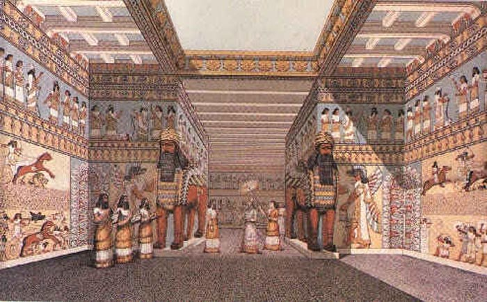
Of Sennacherib’s many construction projects, the most important was the “Palace without Rival,” known today as the Southwest Palace because of its position on Nineveh’s citadel.
The Southwest Palace was larger than any of its predecessors, and its walls were lined with stone bas-reliefs throughout its rooms and colossal winged bulls and lions at key gateways, continuing and expanding traditions begun in the ninth century B.C. at Nimrud.
Cuneiform documents survive relating to the building’s construction, and the dates of these suggest that at least the bulk of the work was undertaken in a remarkably short period, roughly the years 701–693 B.C.
It was Sennacherib who made Nineveh a truly magnificent city (c. 700 BC). He laid out fresh streets and squares and built within it the famous "palace without a rival", the plan of which has been mostly recovered and has overall dimensions of about 210 by 200 m (630 by 600 ft). It comprised at least 80 rooms, of which many were lined with sculpture.
King
Sargon
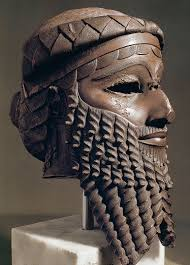
Soon after taking the throne, the Assyrian king Sargon II (r. 721–705 B.C.) founded a new capital city, Dur-Sharrukin (literally "fortress of Sargon"), at a site known today as Khorsabad. Sargon took the throne in a coup against his brother, Shalmaneser V (r. 726–722 B.C.), and it is possible that by moving to a new capital he hoped to consolidate his regime.
Sargon had spent much of his reign directing the construction of his enormous new capital Dur-Sharrukin (literally “Fort Sargon”), work with which Sennacherib as his crown prince may have been heavily involved
Sargon, meaning "true king," was a throne name, and referred to a very ancient king, Sargon of Akkad, who by the Neo-Assyrian period was remembered as a legendary hero
Sennacherib
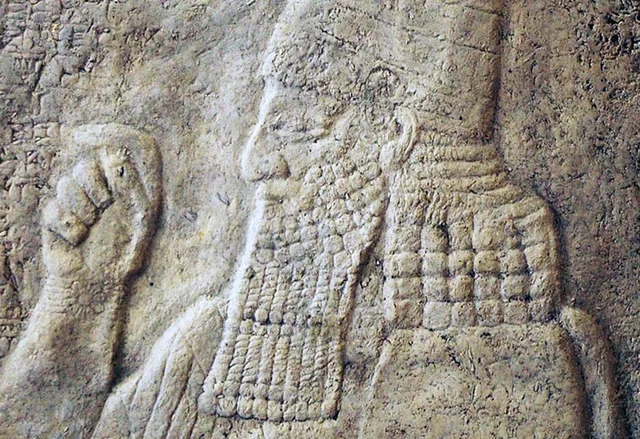
It was the Assyrian king Sennacherib who went to war with the Kingdom of Judah, spiritual home of the Jewish faith and laid siege to Jerusalem. This historic event was not only described in religious scriptures, but also depicted on a remarkable and meticulous series of carvings, etched in in gypsum rock, on the walls of Sennacherib’s palace in Nineveh. Today these inscriptions (The Lachish reliefs) decorate the walls of the British Museum in London.
King Ashurbanipal
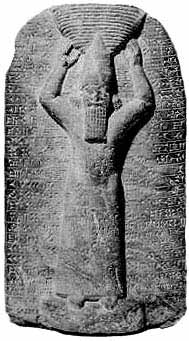
Ashurbanipal - King of Assyria. He was grandson of the famous Sennacherib and son of Esarhaddon. Ashurbanipal, or, as he was known to the Greeks, Sardanapalus, reigned from 668 to 626 B.C. He is best known for amassing a library of literary texts including an epic of creation, the Flood and others. Modern scholars have reason to be grateful to Ashurbanipal because he was a lover of learning and collected a great library of cuneiform clay tablets (over 22,000 in number) that have given to us most of what we know of Babylonian and Assyrian literature. In Ezra 4:10, his name is also rendered "Asnapper" or "Osnapper".
King Assurbanipal is at the centre of the relief that has now been discovered. He is flanked by two high deities: the god Assur and the city goddess of Nineveh named Ištar. These are followed by a fish genius, who bestows salvation and life on the gods and the ruler, as well as a supporting figure with raised arms; presumably a scorpion man.
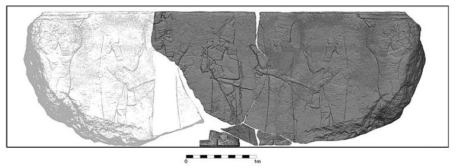
Panel from the North Palace of Nineveh belonging to the group of Lion Hunt of Ashurbanipal. The king shoots arrows from his chariot, while huntsmen fend off a lion behind. The reliefs are widely regarded as the supreme masterpieces of Assyrian art. hey were made about 645–635 BC, and originally formed different sequences placed around the palace. They would probably originally have been painted, and formed part of a brightly coloured overall decor. The panel is in the British Museum in Londo
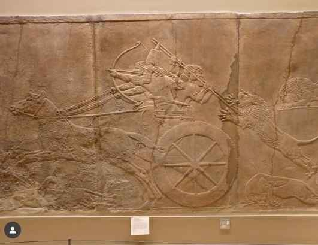
Research
Isis has destroyed a 2,000-year-old ancient structure near the Iraqi city of Mosul.Activists in Mosul told Kurdish news outlet ARA News the Islamist militants had used military equipment to destroy the gate.The destruction of the Mashqi Gate is the latest in a series of historical artefacts to be destroyed in Isis-held territory by the militant group, who view many relics predating Islam as sacrilegious.
In February 2015, the group released propaganda footage of militants vandalising Mosul's museum. It showed ancient statues being destroyed, including a winged-bull Assyrian protective deity which dated back to the 7th-century BC.
The Antiquities Department in Baghdad had not denied the attack, according to the source, who also said there were unconfirmed reports the group was dismantling part of the Walls of Nineveh and selling the stone blocks.